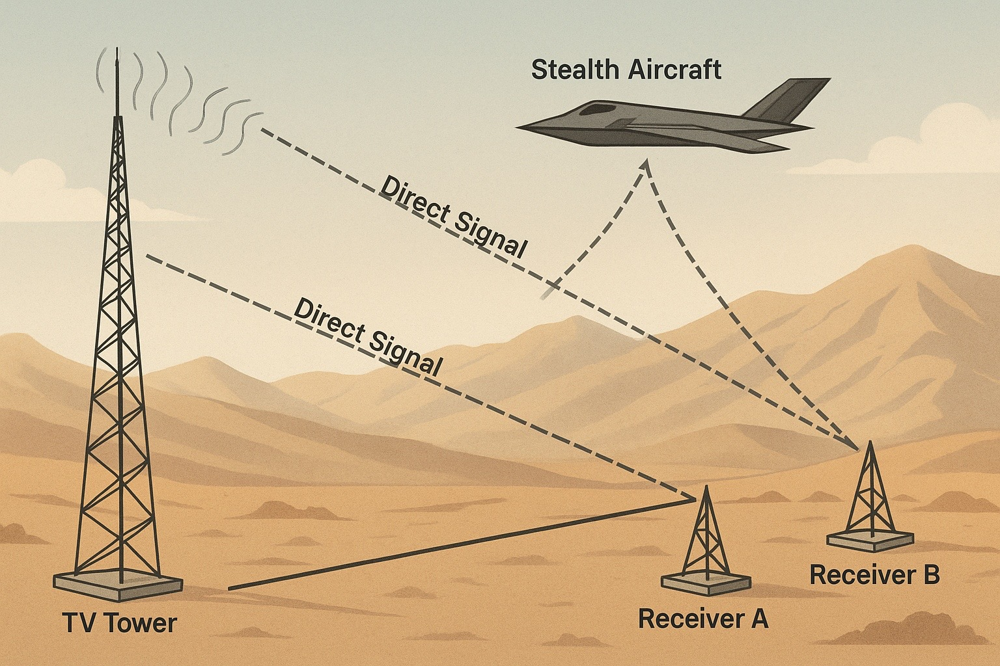

BR Engineering
Electronics Engineering • Radar Concepts • Defense R&D
Résumé:
Download Resume (PDF)
Concept: RF Shadowing and Passive Radar

An RF shadow is a region where incoming radio waves are blocked or attenuated.
A stealth aircraft can use RF shadowing to reduce its visibility to passive radar.
Stealth Jet RF Interaction
